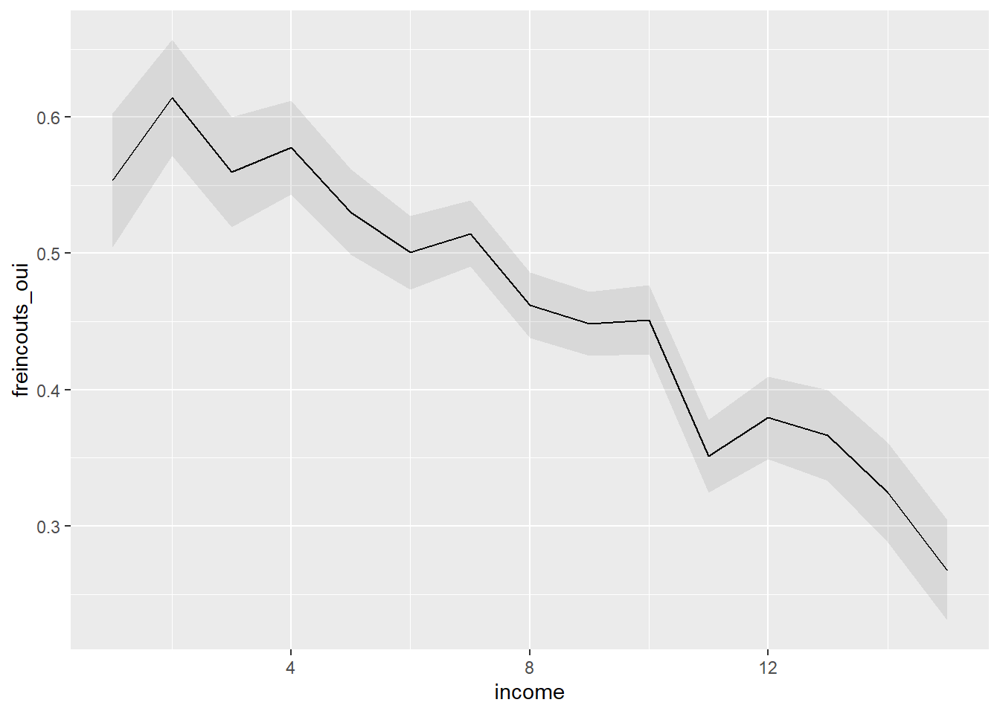
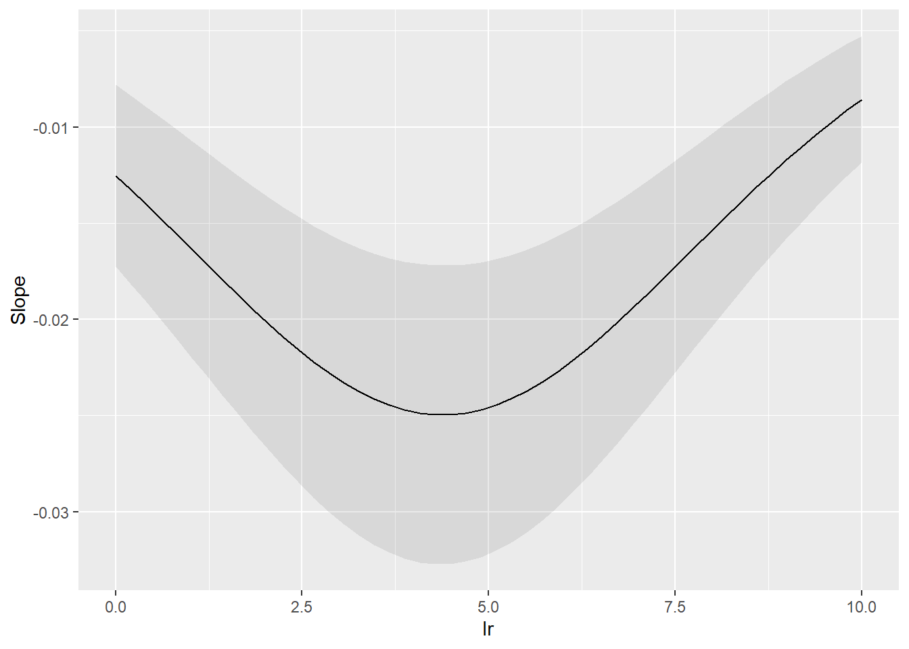

# A tibble: 86 × 2
d1e3 n
<dbl> <int>
1 1.21 5
2 1.23 1
3 1.24 5
4 1.31 13
5 1.32 11
6 1.33 5
7 1.34 3
8 1.41 8
9 1.42 5
10 1.43 8
# ℹ 76 more rowsL’assurance-maladie obligatoire suisse dans l’impasse. Une analyse du compromis socio-politique derrière la Loi fédérale sur l’assurance maladie (LAMal)
Annexe
Swissvotes
Faits stylisés


Votation




Selects panel 2023

Call:
polr(formula = assurance_maladie_franchise_pour ~ eseg10 + canton,
data = selects2023panel2, Hess = TRUE)
Coefficients:
Value Std. Error
eseg10Clerks and skilled service employees -0.4042 0.1274
eseg10Lower status employees -0.3804 0.1464
eseg10Managers -0.0945 0.1203
eseg10Professionals -0.2748 0.1113
eseg10Retired -0.5431 0.1103
eseg10Skilled industrial employees -0.6959 0.1494
eseg10small entrepreneurs -0.3861 0.1769
eseg10Student -0.1449 0.1256
eseg10Technicians and associated professionals employees -0.3445 0.1208
eseg10Unemployed or disabled -0.5631 0.1329
cantonAppenzell Ausserrhoden -0.2579 0.2546
cantonAppenzell Innerrhoden 0.7028 0.4847
cantonBasel-Landschaft 0.0341 0.1366
cantonBasel-Stadt 0.0896 0.1751
cantonBern -0.0968 0.0928
cantonFribourg -0.2544 0.1328
cantonGeneva -0.5488 0.1252
cantonGlarus -0.2879 0.3456
cantonGraubünden 0.3839 0.1502
cantonJura -0.8182 0.2531
cantonLucerne 0.1386 0.1146
cantonNeuchâtel -0.9026 0.1682
cantonNidwalden 0.0447 0.2666
cantonObwalden 0.4143 0.3103
cantonSchaffhausen 0.1209 0.2337
cantonSchwyz 0.1954 0.1776
cantonSolothurn 0.0125 0.1361
cantonSt. Gallen 0.3030 0.1109
cantonThurgau 0.0984 0.1395
cantonTicino -0.3746 0.1267
cantonUri 0.0877 0.3336
cantonValais -0.4573 0.1282
cantonVaud -0.4959 0.1033
cantonZug 0.2331 0.1796
cantonZurich 0.1450 0.0890
t value
eseg10Clerks and skilled service employees -3.1737
eseg10Lower status employees -2.5974
eseg10Managers -0.7853
eseg10Professionals -2.4692
eseg10Retired -4.9224
eseg10Skilled industrial employees -4.6569
eseg10small entrepreneurs -2.1831
eseg10Student -1.1544
eseg10Technicians and associated professionals employees -2.8512
eseg10Unemployed or disabled -4.2367
cantonAppenzell Ausserrhoden -1.0130
cantonAppenzell Innerrhoden 1.4501
cantonBasel-Landschaft 0.2493
cantonBasel-Stadt 0.5120
cantonBern -1.0434
cantonFribourg -1.9160
cantonGeneva -4.3837
cantonGlarus -0.8329
cantonGraubünden 2.5557
cantonJura -3.2332
cantonLucerne 1.2097
cantonNeuchâtel -5.3655
cantonNidwalden 0.1675
cantonObwalden 1.3351
cantonSchaffhausen 0.5174
cantonSchwyz 1.1005
cantonSolothurn 0.0922
cantonSt. Gallen 2.7336
cantonThurgau 0.7056
cantonTicino -2.9572
cantonUri 0.2629
cantonValais -3.5673
cantonVaud -4.8001
cantonZug 1.2982
cantonZurich 1.6300
Intercepts:
Value Std. Error t value
1|2 -1.396 0.125 -11.146
2|3 -0.106 0.124 -0.853
3|4 1.277 0.126 10.165
4|5 2.894 0.136 21.279
Residual Deviance: 21534.34
AIC: 21612.34
(662 observations effacées parce que manquantes)